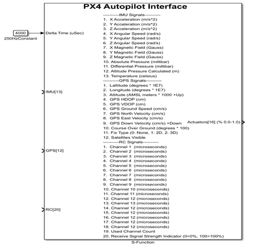
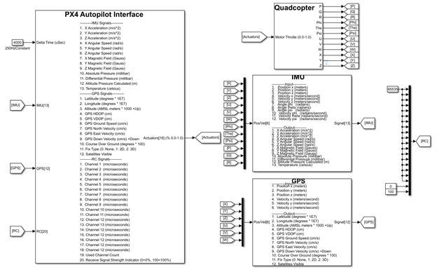
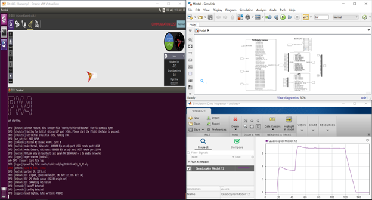
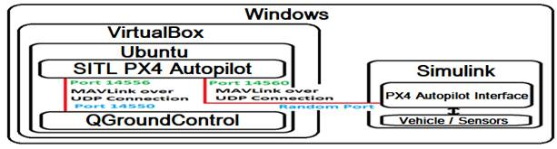

PX4 Autopilot Simulink Interface
Notices:
Copyright 2018,
United States Government as represented by the Administrator of the National
Aeronautics and Space Administration. All Rights Reserved.
MAVLINK__________________________________________
Portions of this software were
generated using Mavlink (https://github.com/mavlink) and
are subject to the following MIT License: Permission is hereby granted, free of
charge, to any person obtaining a copy of the generated software (the
"Generated Software"), to deal in the Generated Software without
restriction, including without limitation the rights to use, copy, modify,
merge, publish, distribute, sublicense, and/or sell copies of the Generated Software,
and to permit persons to whom the Generated Software is furnished to do so,
subject to the following conditions:
The above copyright notice and this
permission notice shall be included in all copies or substantial portions of
the Generated Software.
THE GENERATED SOFTWARE IS PROVIDED
"AS IS", WITHOUT WARRANTY OF ANY KIND, EXPRESS OR IMPLIED, INCLUDING
BUT NOT LIMITED TO THE WARRANTIES OF MERCHANTABILITY, FITNESS FOR A PARTICULAR
PURPOSE AND NONINFRINGEMENT. IN NO EVENT SHALL THE AUTHORS OR COPYRIGHT
HOLDERS BE LIABLE FOR ANY CLAIM, DAMAGES OR OTHER LIABILITY, WHETHER IN AN
ACTION OF CONTRACT, TORT OR OTHERWISE, ARISING FROM, OUT OF OR IN CONNECTION
WITH THE GENERATED SOFTWARE OR THE USE OR OTHER DEALINGS IN THE GENERATED
SOFTWARE.
NASA
Disclaimers
No
Warranty: THE SUBJECT SOFTWARE IS
PROVIDED "AS IS" WITHOUT ANY WARRANTY OF ANY KIND, EITHER
EXPRESSED, IMPLIED, OR STATUTORY, INCLUDING, BUT NOT LIMITED TO, ANY WARRANTY
THAT THE SUBJECT SOFTWARE WILL CONFORM TO SPECIFICATIONS, ANY IMPLIED
WARRANTIES OF MERCHANTABILITY, FITNESS FOR A PARTICULAR PURPOSE, OR FREEDOM
FROM INFRINGEMENT, ANY WARRANTY THAT THE SUBJECT SOFTWARE WILL BE ERROR FREE,
OR ANY WARRANTY THAT DOCUMENTATION, IF PROVIDED, WILL CONFORM TO THE SUBJECT
SOFTWARE. THIS AGREEMENT DOES NOT, IN ANY MANNER, CONSTITUTE AN ENDORSEMENT BY
GOVERNMENT AGENCY OR ANY PRIOR RECIPIENT OF ANY RESULTS, RESULTING DESIGNS,
HARDWARE, SOFTWARE PRODUCTS OR ANY OTHER APPLICATIONS RESULTING FROM USE OF THE
SUBJECT SOFTWARE. FURTHER, GOVERNMENT AGENCY DISCLAIMS ALL WARRANTIES AND
LIABILITIES REGARDING THIRD-PARTY SOFTWARE, IF PRESENT IN THE ORIGINAL
SOFTWARE, AND DISTRIBUTES IT "AS IS."
Waiver and
Indemnity: RECIPIENT AGREES TO WAIVE ANY AND ALL CLAIMS AGAINST
THE UNITED STATES GOVERNMENT, ITS CONTRACTORS AND SUBCONTRACTORS, AS WELL AS
ANY PRIOR RECIPIENT. IF RECIPIENT'S USE OF THE SUBJECT SOFTWARE RESULTS
IN ANY LIABILITIES, DEMANDS, DAMAGES, EXPENSES OR LOSSES ARISING FROM SUCH USE,
INCLUDING ANY DAMAGES FROM PRODUCTS BASED ON, OR RESULTING FROM, RECIPIENT'S
USE OF THE SUBJECT SOFTWARE, RECIPIENT SHALL INDEMNIFY AND HOLD HARMLESS THE
UNITED STATES GOVERNMENT, ITS CONTRACTORS AND SUBCONTRACTORS, AS WELL AS ANY
PRIOR RECIPIENT, TO THE EXTENT PERMITTED BY LAW. RECIPIENT'S SOLE REMEDY
FOR ANY SUCH MATTER SHALL BE THE IMMEDIATE, UNILATERAL TERMINATION OF THIS
AGREEMENT.
Overview of the PX4
Autopilot Simulink Interface.
Checking out the project: git clone https://github.com/MichaelSkadan/PX4-Autopilot-Simulink-Interface
The interface is
implemented in C code which is then compiled to generate a Simulink S-Function.
In Simulink a user defined S-Function block can be added and the generated
S-Function name "PX4" can be specified as the "S-Function name:
" parameter. Below is an example of this block. This block's file name is
"PX4.slx".

The Simulink PX4 Autopilot
Interface C code consist of 2 main files; PX4Main.c and PX4Interface.h. The
PX4Interface.h file declares the functions that the Simulink S-Function
accesses when a simulation is running. There are 2 functions that the
S-Function accesses; start and step. The start function is called when the
Simulink simulation starts, and sets up the required communications
functionality to interface with a software in the loop (SITL) PX4 autopilot
over UDP on an IP network. The step function is called every cycle of the
Simulink simulation. It sends senor measurement values from the Simulink
simulation model to the SITL PX4 autopilot and receives actuator command values
from the SITL PX4 autopilot.
A third file,
BuildPX4Interface.m is utilized to compile and generate the Simulink
S-Function. When this file is run, it invokes the C code compiler that is
install on the computer. This generates 2 files; PX4.c and PX4.mexw64. This
script must be run to generate the files in order for the Simulink S-function
to work correctly.
Note: The current C code
implementation only has support for running on a Windows machine.
Note: All testing has be
conducted with Microsoft Visual Studios compiler install on the computer.
After the C code has been
compiled and the Simulink S-Function block has been created. It can then be
utilized in a Simulink vehicle simulation. Below is an example of a Simulink
quadcopter vehicle simulation utilizing the Simulink S-Function PX4 Autopilot Interface.
This simulation also has 2
sensor blocks; IMU and GPS. In this example the quadcopter block takes motor
control commands received from the PX4 Autopilot Interface block. These
commands produces forces and moments that are applied to the equations of
motion to generate new 6 degree of freedom vehicle state values. The vehicle
state values are then utilized as input to the 2 sensor models. The sensor
models' output is utilized as input to the PX4 Autopilot Interface. The PX4
Autopilot Interface sends the new sensor input data to the SITL PX4 autopilot
and then receives new motor commands back from the SITL PX4 autopilot. This process
is repeated every cycle of the simulation. The simulation is running at a fixed
rate of 250Hz, which is set in the Simulink simulation settings and specified
as the Delta time step of 4000 microseconds to the PX4 Autopilot Interface. The
remote control value 65535 is being sent to the PX4 Autopilot Interface,
indicating that the remote control values should not be used.

With the Simulink model created,
it can then be run and controlled by a SITL PX4 autpilot
as shown below. This image was captured on a Windows 10 computer. The computer
has Simulink and VirtualBox installed. Ubuntu is
being run in VirtualBox. Ubuntu has the SITL PX4
autopilot and QGroundControl installed. In the image
below. The left half is VirtualBox running Ubuntu,
with QGroundControl on top and SITL PX4 autopilot
command line interface (CLI) on the bottom. The right half is Windows running
Simulink, with the simulation block diagram on top and the simulation's signal
analysis on the bottom.
This image was captured
after the vehicle had completed a simple mission. As can be seen in the signal
analysis plot for the vehicle's altitude. The mission consisted of a takeoff,
short hover at 5ft, longer hover at 10ft, and finally a landing.
When the Simulink
simulation is run, the SITL PX4 autopilot CLI begins to update, indicating that
it is communicating with the Simulink simulation. After the CLI outputs
"EKF commencing GPS fusion", the vehicle is ready to fly a mission.
At that point, on the QGroundControl window, the
start mission option was selected. As the vehicle flies its mission, updates
are displayed on the SITL PX4 CLI, indicating "Takeoff detected" and
"Landing detected".

Below is a diagram of the
communication between the Simulink S-Function PX4 Autopilot Interface, the SITL
PX4 autopilot, and the ground control station. All communication are via MAVLink over UDP on an IP network connected as shown in the
diagram below. This example runs on a single Windows computer, though Ubuntu
could also be run on a separate machine.

Note: The current
implementation of the PX4 Autopilot Simulink Interface requires the SITL PX4
autopilot to be on IP address 192.168.46.2.